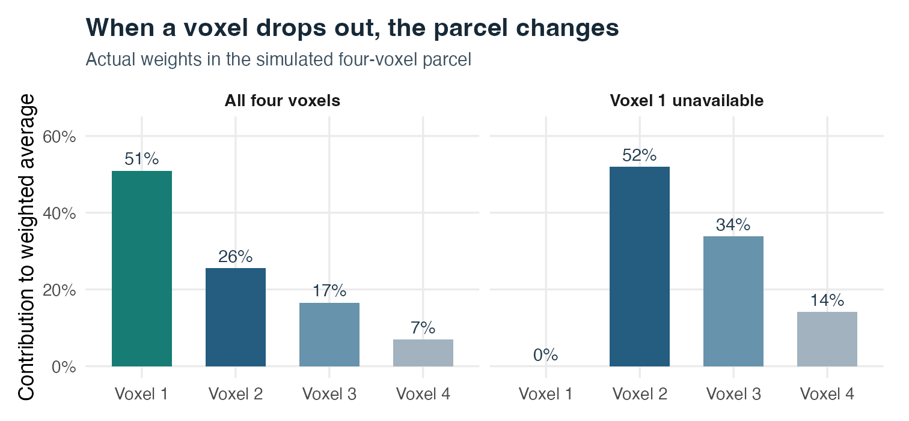
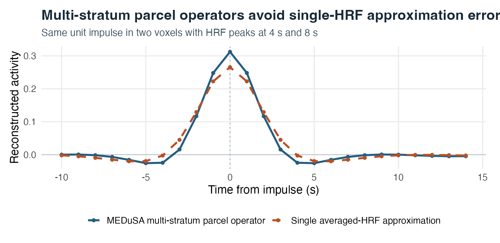
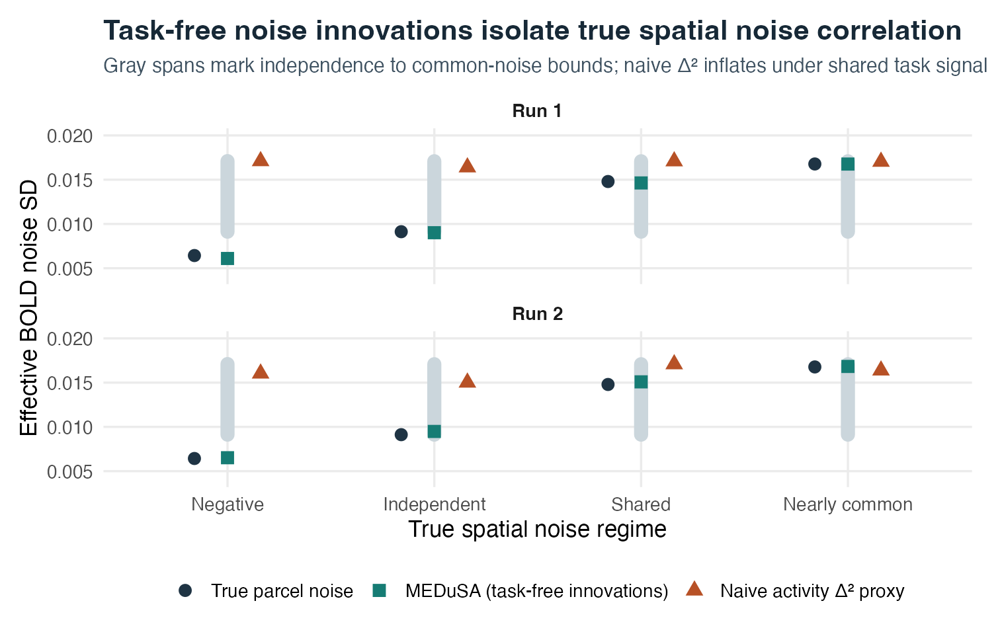
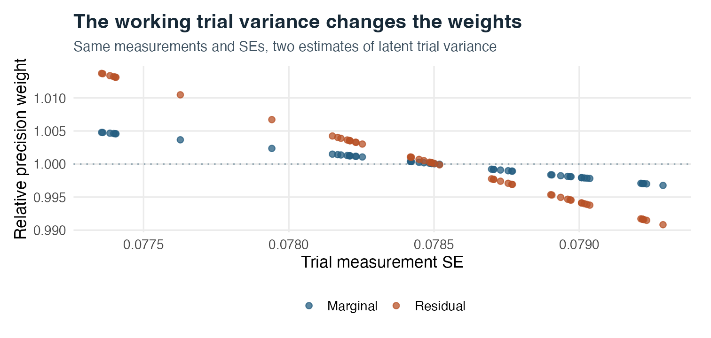
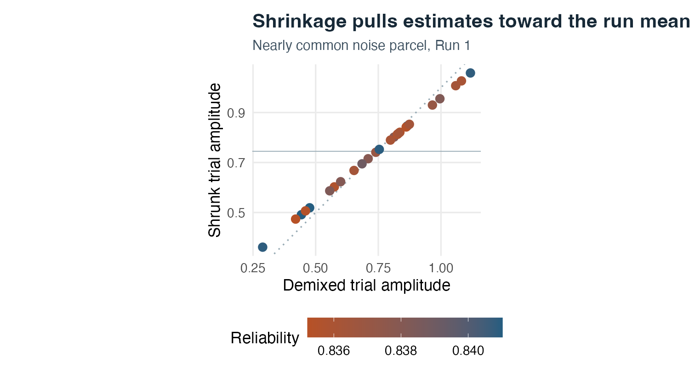
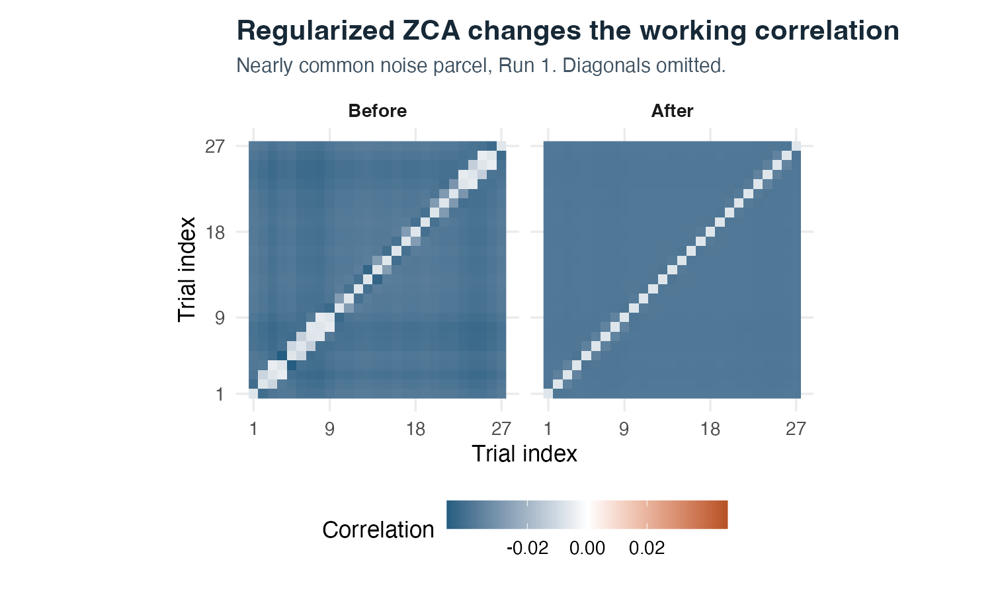

library(medusa)
ep <- decon_epoch_regression(
deconvolution = decon,
covariates = covariates,
events = events,
target_condition = "feedback",
lags = seq(-2, 4, by = 1),
parcel_groups = parcel_ids,
restore_scale = TRUE,
whiten_panel = TRUE,
return_panel = TRUE
)
ep$panel[, id := subject_id]Step 4: Parcel Aggregation and Analysis Panels
Precision-weighted spatial pooling, task-free spatial noise propagation, and group-ready panel columns
Overview
Many task-fMRI hypotheses are formulated at the level of anatomical regions or functional parcels rather than single voxels. Combining voxels within a parcel boosts trial-level signal-to-noise ratio substantially, provided aggregation happens at the right point in the pipeline: after each voxel’s run has been deconvolved under its own HRF and \(\text{AR}(p)\) whitener, and before trial-level event de-mixing and precision weighting.
Step 4—executed inside decon_epoch_regression(..., parcel_groups = parcel_ids)—pools continuous deconvolved time series within each parcel using cross-run precision and task-support weights, accumulates exact multi-stratum linear operators when intra-parcel voxels differ in HRF or noise stratum, measures spatial noise correlation directly from Step 2’s task-free noise_innovations, and outputs a tidy participant panel ready to stack across a cohort for Steps 5 and 6.
NotePosition in the MEDuSA Pipeline
Step 2 decon + parcel_groups vector \(\longrightarrow\) Step 4 (decon_epoch_regression(..., parcel_groups = ...) ) \(\longrightarrow\) Subject epochs list & stacked group_panel \(\longrightarrow\) Step 5 (mixed_by / medusa_multilag_infer) & Step 6 (decon_connectivity_repair)
The walkthrough below develops Step 4 in four substeps: computing SNR-informed voxel weights (4.1), combining mixed intra-parcel operator strata (4.2), propagating spatial noise correlations without task contamination (4.3), and constructing cohort-ready weights and panel columns (4.4).
Goals, Inputs, and Outputs
Goals of Step 4
- Aggregate voxels using cross-run SNR-optimal weights (
parcel_weights): Weight constituent voxels inversely by their cross-run observation-noise variance and upweight voxels with stronger cross-fitted Step 1 task \(R^2\). - Preserve intra-parcel
(HRF, AR, lambda)heterogeneity: Combine per-stratum forward and inverse operators (\(\sum_s w_s D_s F_s\)) directly rather than approximating a parcel with a single averaged HRF. - Propagate within- and between-parcel spatial noise correlation accurately: Estimate parcel measurement noise and cross-parcel error correlations from Step 2’s task-free whitened
noise_innovations. - Produce a self-contained participant trial panel for cohort inference: Export aligned de-mixed readouts, conditional standard errors, cohort-comparable precision weights, paired within-run decorrelated (
*_whitened) variables, and cross-parcel shared-noise loadings.
Inputs: What Step 4 Receives and Why
In addition to the Step 3 arguments (deconvolution, events, target_condition, lags, covariates), Step 4 uses four spatial and panel parameters:
| Input | Structure | Why It Is Set Up That Way |
|---|---|---|
parcel_groups |
Named character/factor vector mapping voxel_ids to parcel labels (or ts$parcel_ids from read_nifti_ts()) |
Naming elements by voxel_ids guarantees exact column alignment and automatically enables aggregate_by_parcel = TRUE. |
deconvolution$noise_innovations |
Carried automatically inside deconvolution (n_valid_rows × n_voxels per run) |
Provides orthonormalized, task-projected \(\text{AR}(p)\) innovations from Step 2 so shared task responses across voxels are separated cleanly from shared scanner noise. |
tau2_mode & tau2_shrinkage |
tau2_mode = c("auto", "marginal", "residual"); tau2_shrinkage = c("auto", "graph_eb", "eb", "none") |
Govern how parcel biological trial-to-trial variance \(\hat{\tau}_{\text{bio}}^2\) is estimated ("auto" defaults to "none" on standard coarse parcels; setting "graph_eb" builds a 3D parcel-centroid Euclidean graph for fine 400–1000-parcel atlases). |
restore_scale & whiten_panel |
Logical flags (TRUE recommended for both) |
Place runs onto physical BOLD units before pooling and export paired within-run symmetrically decorrelated (*_whitened, regularized ZCA) outcome and predictor columns on the parcel covariance. |
Outputs: What Step 4 Produces and Why It Is Set Up That Way
| Panel Column / Object Field | Meaning & Units | Downstream Role |
|---|---|---|
run, trial, event_index, onset, evt_time, parcel |
Composite observation keys (attach id before stacking subjects) |
event_index indexes exact rows of events[[run]] for behavioral merges; (id, run, event_index, evt_time, parcel) uniquely keys every cohort row. |
decon_raw & decon_demixed |
Uncorrected readout vs. de-mixed, gain-restored parcel readout | decon_demixed serves as the primary neural outcome in Step 5 and neural predictor/target in Step 6; decon_raw provides a comparison baseline. |
se_demixed & error_ac1 |
Propagated per-trial parcel SE; lag-1 trial error correlation | Quantify conditional sampling uncertainty for Step 5 weights and Step 6 predictor measurement-error subtraction. |
precision_weight & precision_weight_cohort |
Within-unit mean-1 weight vs. unnormalized \((\hat{\tau}_{\text{eff}}^2 + s_{ri}^2)^{-1}\) | precision_weight weights trials within one person; precision_weight_cohort preserves between-participant reliability differences in Step 5 mixed_by(). |
decon_eb & reliability_trial |
Empirical-Bayes shrunk readout \(\bar{y}_r + \text{rel}_{ri}(y_{ri} - \bar{y}_r)\) | Stabilizes single-trial plots and descriptive visualizations using within-run trial reliability. |
decon_demixed_whitened & <var>_whitened |
Paired within-run ZCA-decorrelated parcel outcome and centered predictors | Remove residual serial trial error correlation when analyzed as matched pairs in Step 5. |
shared_noise_loading & epochs$unit_error_cor |
Per-parcel factor loading vector (\(R_{\text{err}} \approx \ell \ell^\top\)) and full cross-parcel correlation matrix | Preserve task-free cross-parcel error correlations across rbindlist() and .rds/Parquet storage for Step 6 shared_error = "auto". |
Step-by-Step Walkthrough: Substeps and Choice Points
4.1 Weight voxels within each parcel by cross-run precision and task support
Consider a parcel containing four voxels whose observation-noise SDs range from 0.013 (interior gray matter) to 0.032 (noisy pial edge). An unweighted average gives the noisy edge voxel the same influence as the quietest voxel. Instead, Step 4 forms fixed cross-run voxel weights \(u_v\) normalized to \(\sum_{v \in g} u_v = 1\):
\[ u_v \propto \frac{1 + \overline{R}^2_{\text{cv},v} / \bigl(0.05 + \operatorname{med}(\overline{R}^2_{\text{cv}})\bigr)}{\max\!\bigl(\overline{\sigma}_v^2,\; 0.10\,\operatorname{med}(\overline{\sigma}^2)\bigr)}. \]
Quieter voxels with stronger cross-fitted Step 1 task \(R^2\) receive higher weight, and if a single voxel becomes invalid in one scan (for instance, partial field-of-view dropout in Run 2), the remaining valid voxels in that run renormalize smoothly to sum to 1 (Figure 7.1).

sd = 0.013, 0.018, 0.022, 0.032) and automatic renormalization in Run 2 when Voxel 1 is marked invalid.
Choice point — Parcel panels (parcel_groups) vs. voxelwise Graph-EB mapping: Parcel aggregation is ideal when hypotheses target network ROIs, multi-lag group trajectories (medusa_multilag_infer()), or region-to-region connectivity (decon_connectivity_repair()). When effects may occupy small sub-parcel nuclei (\(< 15\%\) of a parcel) or cross shifted individual functional boundaries, omit parcel_groups to run voxelwise Graph-EB mapping (see Spatial Graph Pooling for a direct benchmark).
4.2 Accumulate exact multi-stratum parcel operators
Suppose voxels inside the same parcel belong to different (HRF, AR, lambda) strata—for example, when Step 1 used pooling = "graph" (separating pial-vein autocorrelation from interior gray matter) and Step 2 used lambda_mode = "auto". Because matrix inversion is nonlinear, deconvolving under a single parcel-averaged HRF \(\bar{h} = \frac{1}{2}(h_4 + h_8)\) differs systematically from averaging voxelwise deconvolved series (16.6% waveform discrepancy in Figure 7.2: \(\frac{1}{2}(D_1 F_1 + D_2 F_2) \neq D(\bar{h})F(\bar{h})\)).
Step 4 preserves exact operator correspondence by first forming the weighted parcel continuous series \(\widehat{a}_{r,g} = \sum_{v \in g} u_v \widehat{a}_{r,v}\) and simultaneously accumulating the exact stratum-weighted forward/inverse operator \(\sum_s w_s D_s F_s\) used in Step 3 de-mixing (Figure 7.2).

MEDuSA multi-stratum parcel operator) vs. a single averaged-HRF approximation when a two-voxel parcel mixes 4 s and 8 s HRFs.
4.3 Estimate spatial noise covariance from task-free innovations
To compute valid parcel standard errors (se_demixed), we need the effective observation-noise variance of the weighted parcel combination \(\sum_{v \in g} u_v e_v\). For voxel noise SDs \(\sigma_v\) and spatial noise correlations \(R_{\text{spatial}, uv}\), that variance is
\[ \sigma_{\text{parcel}}^2 = \sum_{u \in g} \sum_{v \in g} u_u u_v \sigma_u \sigma_v R_{\text{spatial}, uv}. \]
In our 4-voxel example (simulate_step4.R), \(\sigma_{\text{parcel}}\) equals 0.0091 if voxel errors are independent (\(R_{\text{spatial}} = I\)), but rises nearly twofold to 0.0171 if all four voxels share common noise (\(R_{\text{spatial}} = \mathbf{1}\mathbf{1}^\top\)). Estimating spatial correlation from second differences of deconvolved activity (\(\Delta^2 \hat{a}\)) conflates shared task-evoked neural responses with shared noise—pegging estimated noise near the 0.0171 ceiling even when true noise is independent (0.00) or negatively correlated (-0.20).
By instead projecting \(u \odot \sigma\) onto Step 2’s task-free whitened noise_innovations (\(\hat{\sigma}_{\text{parcel}} = \|Z_r (u \odot \sigma)\|_2\)), MEDuSA recovers the true spatial noise SD across all four correlation regimes (Figure 7.3, Table 7.1) and matches analytical se_demixed to 9.71e-17. Pooling normalized parcel innovation vectors across runs also yields the cross-parcel error correlation matrix unit_error_cor and its factor representation shared_noise_loading for Step 6.

-0.20, 0.00, 0.65, 0.95): true oracle spatial SD vs. MEDuSA’s task-free innovation estimator vs. a naive \(\Delta^2\) activity proxy.
Show supporting code
knitr::kable(
d4$metrics[, c("run", "parcel", "rho", "independence", "oracle", "medusa", "naive_d2", "ceiling")],
digits = 4, row.names = FALSE,
col.names = c("Run", "Parcel", "Spatial r", "Indep. Floor", "True SD", "MEDuSA SD", "Naive Δ² Proxy", "Common Ceiling")
)parcel_noise_check.csv).
| Run | Parcel | Spatial r | Indep. Floor | True SD | MEDuSA SD | Naive Δ² Proxy | Common Ceiling |
|---|---|---|---|---|---|---|---|
| run1 | Negative | -0.20 | 0.0091 | 0.0064 | 0.0061 | 0.0171 | 0.0171 |
| run1 | Independent | 0.00 | 0.0091 | 0.0091 | 0.0090 | 0.0164 | 0.0171 |
| run1 | Shared | 0.65 | 0.0091 | 0.0148 | 0.0146 | 0.0171 | 0.0171 |
| run1 | Nearly common | 0.95 | 0.0091 | 0.0168 | 0.0168 | 0.0170 | 0.0171 |
| run2 | Negative | -0.20 | 0.0091 | 0.0064 | 0.0065 | 0.0160 | 0.0171 |
| run2 | Independent | 0.00 | 0.0091 | 0.0091 | 0.0095 | 0.0150 | 0.0171 |
| run2 | Shared | 0.65 | 0.0091 | 0.0148 | 0.0151 | 0.0171 | 0.0171 |
| run2 | Nearly common | 0.95 | 0.0091 | 0.0168 | 0.0168 | 0.0164 | 0.0171 |
4.4 Compute biological trial variance, cohort weights, and panel columns
On the aggregated parcel series, Step 4 estimates biological trial-to-trial variance \(\hat{\tau}_{\text{bio}}^2\) and builds three complementary sets of panel columns:
- Within-person vs. cohort precision weights (Figure 7.4): Both use composite inverse variance \((\hat{\tau}_{\text{eff}}^2 + s_{ri}^2)^{-1}\).
precision_weightnormalizes to mean 1 within each participant/parcel, whereasprecision_weight_cohortretains unnormalized inverse variance so Step 5mixed_by()appropriately downweights high-noise scans and participants across the cohort. - Empirical-Bayes shrunk readouts (
decon_eb, Figure 7.5): Shrinks noisy individual trials toward the run mean using trial reliability \(\hat{\tau}_{\text{eff}}^2 / (\hat{\tau}_{\text{eff}}^2 + s_{ri}^2)\) for clean single-trial visualization. - Paired within-run decorrelated columns (
whiten_panel = TRUE, Figure 7.6): Applies a run-mean-preserving symmetric decorrelation map (regularized zero-phase component analysis, or ZCA whitening) equally todecon_demixedand supplied covariates on the parcel covariance \(\Sigma_{\text{tot}}\), removing serial trial error correlations while keeping each trial aligned to its original ordering.

precision_weight vs. se_demixed under "marginal" and "residual" working trial-variance modes.

decon_eb) vs. decon_demixed colored by reliability_trial (Nearly common parcel, Run 1).

Nearly common parcel, Run 1).
Choice point — Working trial variance (tau2_mode & tau2_shrinkage) and whiten_panel: Use tau2_mode = "auto" when covariates are supplied at Step 4, or "marginal" when building a covariate-agnostic panel (covariates = NULL) to reuse across multiple behavioral models. Keep tau2_shrinkage = "auto" on standard parcellations (100–200 parcels), or set tau2_shrinkage = "graph_eb" on dense 400–1000-parcel atlases to borrow variance precision across 3D parcel centroids.
Recommended Settings
# Participant-level parcel panel call (Steps 3 + 4 combined)
ep <- decon_epoch_regression(
deconvolution = decon,
covariates = covariates, # or NULL for a covariate-agnostic panel
events = events,
target_condition = "feedback",
lags = seq(-2, 4, by = 1),
parcel_groups = parcel_ids, # activates aggregate_by_parcel = TRUE
source_model = "impulse",
readout_kernel = "triangle",
demix_other_events = TRUE,
demix_target_trials = TRUE,
demix_within_trial = FALSE, # leave FALSE before medusa_multilag_infer()
restore_scale = TRUE,
tau2_mode = "auto",
tau2_shrinkage = "auto", # or "graph_eb" for dense 400-1000 parcel atlases
whiten_panel = TRUE,
return_panel = TRUE
)
# Attach participant ID before stacking across subjects (or writing partitioned Parquet)
ep$panel[, id := subject_id]| Argument | Recommended | Package Default | Summary of Role & When to Adjust |
|---|---|---|---|
parcel_groups |
parcel_ids / ts$parcel_ids |
NULL |
Activates Step 4 SNR-weighted continuous parcel aggregation (Substep 4.1). |
restore_scale |
TRUE |
FALSE |
Places all runs of a parcel onto physical BOLD units so precision_weight_cohort is comparable across runs and participants (Substep 4.4). |
tau2_mode |
"auto" (or "marginal" when covariates = NULL) |
"auto" |
Estimates parcel biological trial variance for composite trial weights and ZCA (Substep 4.4). |
tau2_shrinkage |
"auto" ("graph_eb" on 400–1000 parcels) |
"auto" |
Defaults to "none" on coarse high-SNR parcels; "graph_eb" builds a 3D parcel-centroid Euclidean graph from voxel_map. |
whiten_panel & return_panel |
TRUE & TRUE |
FALSE (TRUE if covariates = NULL) |
Exports the complete panel alongside paired *_whitened columns (Substep 4.4). |
Practical Considerations: Voxel Dropout, Role-Specific Columns, and Handoffs
- Checking run-to-run voxel coverage: When partial FoV clipping drops voxels from a small parcel in one run, renormalization shifts the parcel’s spatial center slightly; inspect
decon$scaling[[r]]$statuswhenever dropout is non-trivial. - Matching panel columns to their statistical role: Mirrors the distinction between unshrunk likelihood-only readouts and shrunken EB predictions (Skrondal & Laake, 2001; Vig & Hallquist, 2026):
- Use
decon_demixed(withweights = "precision_weight_cohort") for Step 5 outcomes and Step 6 M-MOMS connectivity; reservedecon_ebfor plotting stabilized trial values rather than entering it into regressions without accounting for shrinkage (see the Visual QC Gallery for a visual demonstration ofdecon_ebslope attenuation). - When using ZCA-whitened variables, pair
decon_demixed_whitenedexclusively with matched<var>_whitenedpredictors from the same(parcel, evt_time)split.
- Use
- Cohort storage handoff: Attach
id(andsessionif longitudinal) before combining participants. Savingsubject_epochsas.rdsor writing panels to Parquet (arrow::write_dataset()) preserves theshared_noise_loadinglist-column for Step 6 alongside scalable disk streaming for Step 5mixed_by().
Mathematical Reference & Reproduction
- Within-parcel effective noise variance: Let \(Z_r \in \mathbb{R}^{m_r \times V}\) denote Step 2’s column-unit-norm task-projected whitened innovations (
colSums(Z_r^2) == 1). For parcel \(g\) with valid voxels \(V_g\), normalized weights \(u_g\), and voxel observation-noise SDs \(\sigma_{r,V_g}\), define \(\zeta_{r,g} = Z_{r,V_g} (u_g \odot \sigma_{r,V_g})\). Because \(\mathbb{E}[Z_{r,i}^\top Z_{r,j}] = R_{\text{spatial},ij}\), \(\|\zeta_{r,g}\|_2^2 = \sum_{i,j \in V_g} u_i u_j \sigma_i \sigma_j \hat{R}_{\text{spatial},ij}\) estimates parcel observation-noise variance without task contamination, bounded into \([0.05\,\sigma_{\text{ind}}^2, \sigma_{\text{ceil}}^2]\). - Cross-parcel
shared_noise_loading: Normalizing \(\tilde{z}_{r,g} = \zeta_{r,g} / \|\zeta_{r,g}\|_2\) and pooling \(\tilde{Z}_r^\top \tilde{Z}_r\) across runs (weighted by residual degrees of freedom, adjusted for inter-stratum operator overlap, Empirical-Bayes shrunk on noisy off-diagonals, and projected onto the nearest positive semi-definite correlation matrix) yieldsunit_error_cor, whose principal factor loadings are stored inpanel$shared_noise_loading.
Step 4 simulation script · Figure script · Parcel noise table